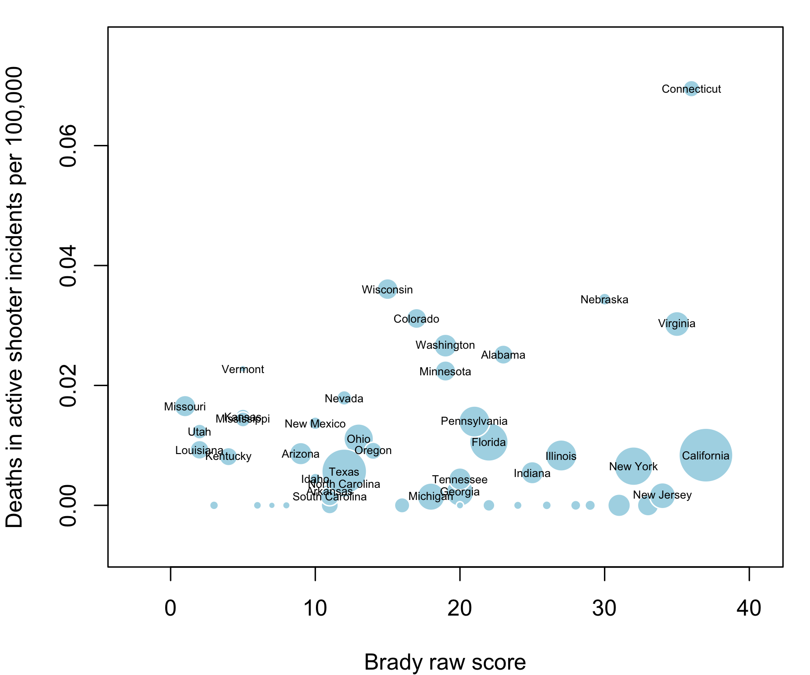

Just the data. Draw your own conclusions.
Call:
lm(formula = d$firearm_murders_per_100000 ~ d$brady_raw_score,
weights = d$population)
Weighted Residuals:
Min 1Q Median 3Q Max
-6096.5 -2622.8 -948.4 1046.6 9840.0
Coefficients:
Estimate Std. Error t value Pr(>|t|)
(Intercept) 3.14976 0.38951 8.086 1.89e-10 ***
d$brady_raw_score -0.01544 0.01634 -0.945 0.349
---
Signif. codes: 0 '***' 0.001 '**' 0.01 '*' 0.05 '.' 0.1 ' ' 1
Residual standard error: 3039 on 47 degrees of freedom
(1 observation deleted due to missingness)
Multiple R-squared: 0.01866, Adjusted R-squared: -0.00222
F-statistic: 0.8937 on 1 and 47 DF, p-value: 0.3493
Call:
lm(formula = d$active_shooter_deaths_per_100000 ~ d$brady_raw_score,
weights = d$population)
Weighted Residuals:
Min 1Q Median 3Q Max
-27.990 -14.594 -8.173 9.084 110.794
Coefficients:
Estimate Std. Error t value Pr(>|t|)
(Intercept) 9.091e-03 3.468e-03 2.622 0.0117 *
d$brady_raw_score 5.532e-05 1.461e-04 0.379 0.7067
---
Signif. codes: 0 '***' 0.001 '**' 0.01 '*' 0.05 '.' 0.1 ' ' 1
Residual standard error: 27.19 on 48 degrees of freedom
Multiple R-squared: 0.002977, Adjusted R-squared: -0.01779
F-statistic: 0.1433 on 1 and 48 DF, p-value: 0.7067Brady Campain to Prevent Gun Violence, 2013 State Scorecard
United States Census Bureau, Population Estimates
FBI, A Study of Active Shooter Incidents in the United States Between 2000 and 2013
state brady_raw_score murders murders_with_firearms active_shooter_deaths population
1 Alabama 23 2 1 17 4830533
2 Alaska 8 34 12 0 737442
3 Arizona 9 304 184 8 6630799
4 Arkansas 11 154 110 1 2957957
5 California 37 1745 1224 45 38414128
6 Colorado 17 174 88 23 5271132
7 Connecticut 36 86 60 35 3597168
8 Delaware 24 39 33 0 925353
9 Florida 22 NA NA 29 19594467
10 Georgia 20 534 411 3 9991562
11 Hawaii 29 9 6 0 1408765
12 Idaho 10 26 15 1 1612785
13 Illinois 27 433 364 15 12889580
14 Indiana 25 311 238 5 6570518
15 Iowa 16 42 18 0 3092224
16 Kansas 5 112 78 6 2894630
17 Kentucky 4 165 111 5 4398500
18 Louisiana 2 453 356 6 4627491
19 Maine 22 24 12 0 1328778
20 Maryland 33 379 268 0 5936040
21 Massachusetts 31 135 78 0 6708810
22 Michigan 18 625 440 2 9900506
23 Minnesota 19 110 60 17 5420541
24 Mississippi 5 142 110 6 2990976
25 Missouri 1 371 273 14 6043708
26 Montana 3 15 9 0 1014402
27 Nebraska 30 57 39 9 1869300
28 Nevada 12 157 87 7 2790366
29 New Hampshire 28 21 5 0 1322660
30 New Jersey 34 401 291 2 8907384
31 New Mexico 10 106 59 4 2086890
32 New York 32 648 362 18 19691032
33 North Carolina 12 452 315 5 9845432
34 North Dakota 20 11 4 0 723626
35 Ohio 13 434 309 18 11572232
36 Oklahoma 11 191 127 0 3853405
37 Oregon 14 78 43 5 3928030
38 Pennsylvania 21 594 440 25 12783536
39 Rhode Island 26 31 18 0 1052856
40 South Carolina 11 296 224 1 4768498
41 South Dakota 6 12 3 0 845270
42 Tennessee 20 327 223 4 6496130
43 Texas 12 1133 760 21 26500674
44 Utah 2 49 31 5 2903685
45 Vermont 5 9 5 2 627129
46 Virginia 35 315 225 35 8267875
47 Washington 19 155 86 26 6973281
48 West Virginia 22 54 30 0 1852985
49 Wisconsin 15 157 103 29 5743653
50 Wyoming 7 15 9 0 583131